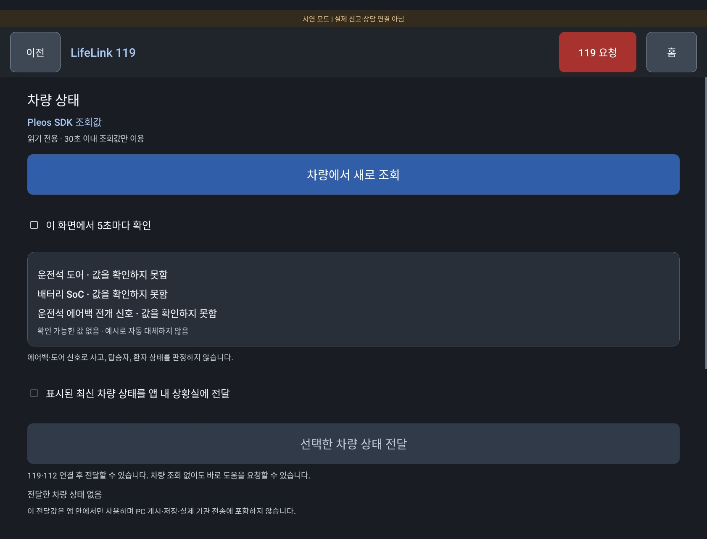
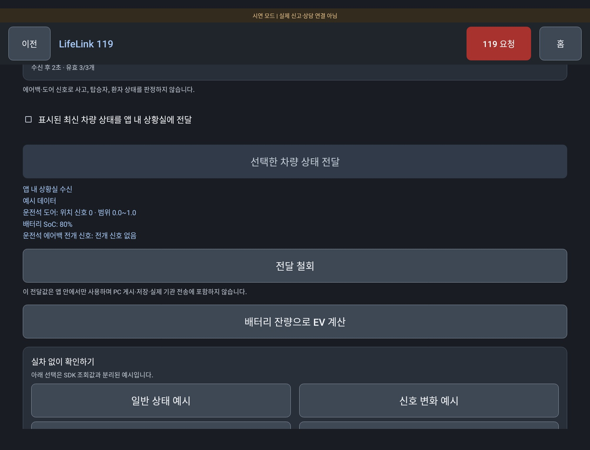
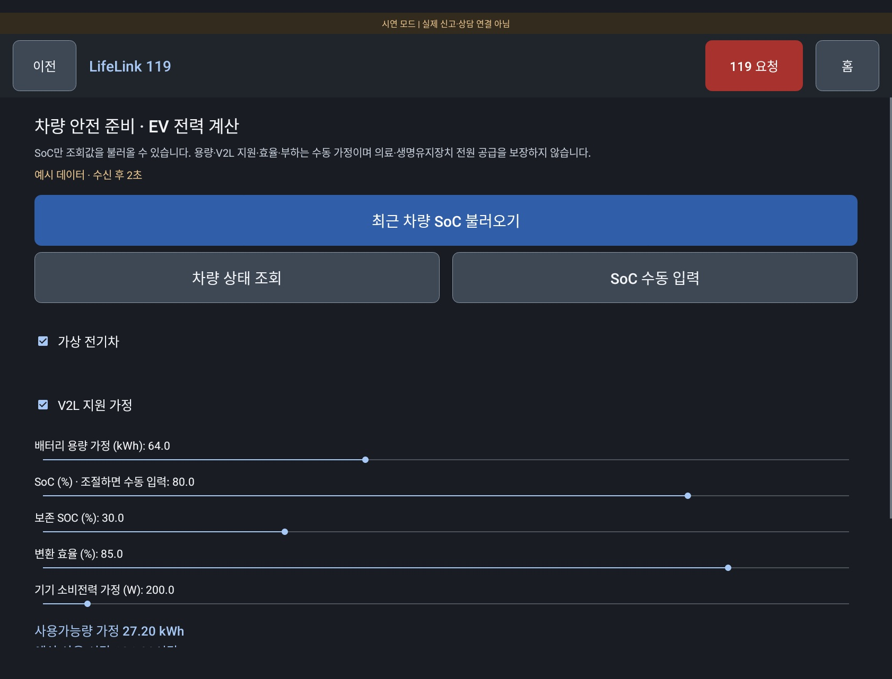
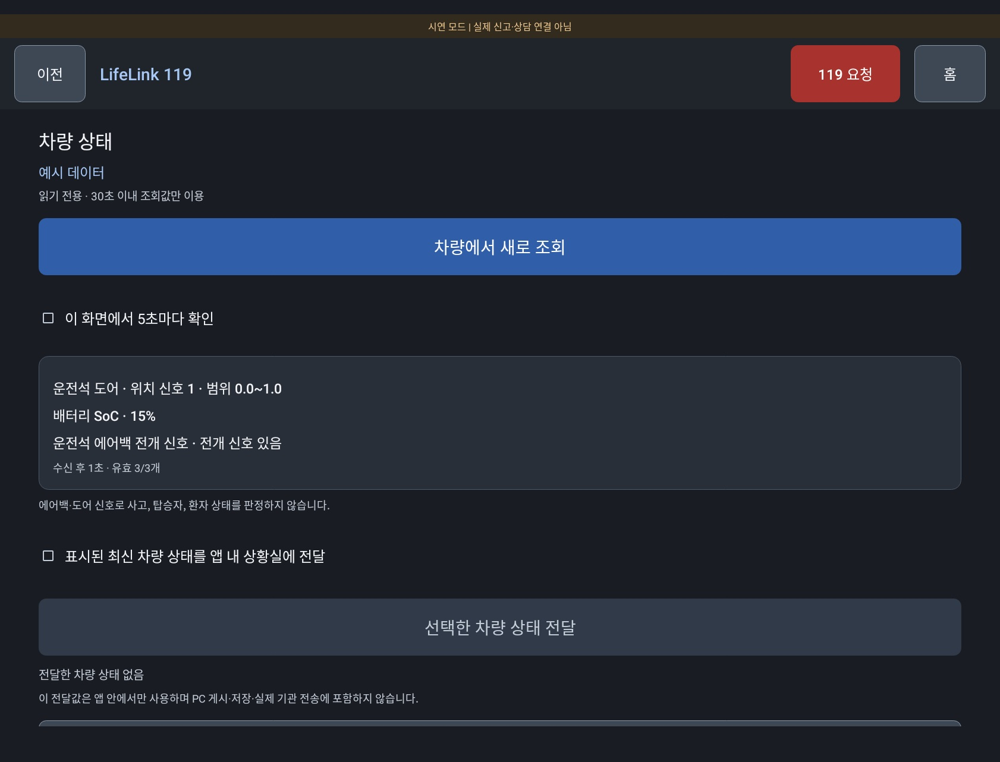
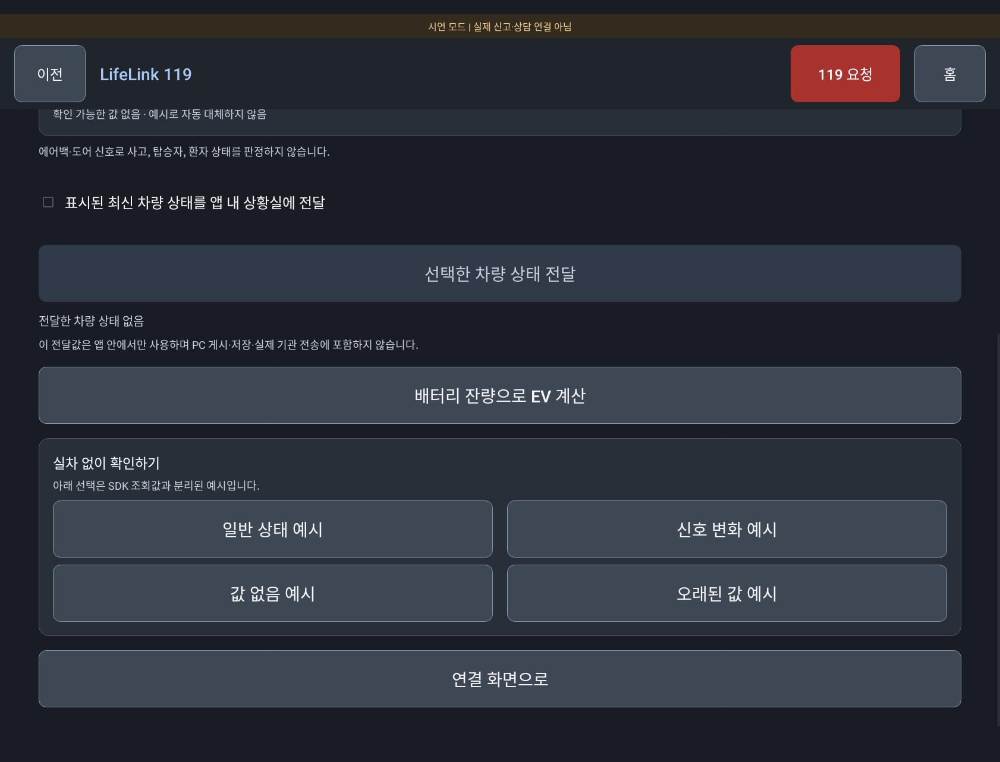
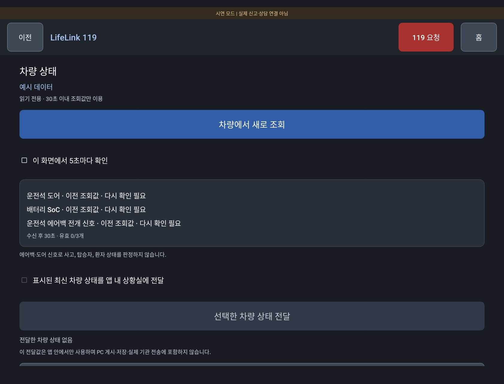
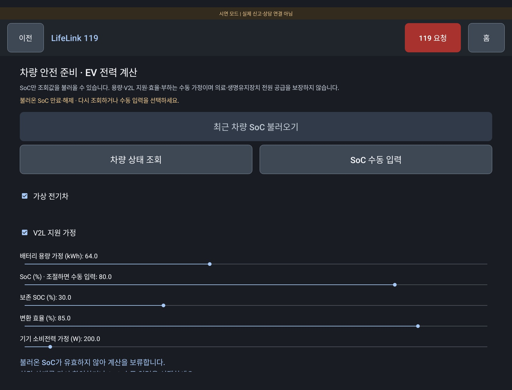

SDK 연결이 없는 환경
일반 Android에서는 차량 조회 불가를 알립니다. 예시 성공값으로 자동 교체하지 않습니다.

선택한 최신 상태 전달
사용자 동의를 받은 스냅샷만 앱 내 상황실에 표시합니다. 이 화면의 값은 명시적으로 고른 예시입니다.

차량 잔량을 계산에 반영
SoC 80% 예시를 직접 불러왔습니다. 용량·보존 잔량·효율·부하는 수동 가정입니다.

차량 신호 변화
예시에서 SoC 15%와 에어백 전개 신호를 확인합니다. 사고·환자 상태를 자동 판단하지 않습니다.

값 없음
값이 없는 상태를 0이나 안전한 상태로 해석하지 않습니다.

오래된 조회값
이전 조회값은 다시 확인하도록 안내하고 전달·불러오기를 막습니다.

불러온 SoC 만료
수신 후 30초가 지나면 계산을 보류합니다. 재조회 또는 명시적인 수동 입력 선택이 필요합니다.
